第二次作业 · Lec07§
对应知识点：02-Smith圆图怎么读
导航： 总目录 · 符号与导读 · Lec06 · Lec07 · Lec08–09 · 附录
Lec07 作业（圆图 + 解析；初学者导读）§
阅读建议： 若你从未用过 Smith 圆图，请先通读下面 「Smith 圆图零基础」，再按各题 解法二 的配图与 读图说明 逐步操作；解法一（公式） 可单独用来写答案与验算，两条路径的数值应一致（读图允许小视差）。
本讲公共预备知识§
Smith 圆图零基础§
（1）你在看哪个平面？ 阻抗 Smith 圆图通常画在 反射系数 $\Gamma$ 的复平面上：横轴为 $\mathrm{Re}\,\Gamma$，纵轴为 $\mathrm{Im}\,\Gamma$；最外圈黑线圆表示 $|\Gamma|=1$（全反射边界）。图里那些 淡灰色 的曲线不是「随便画的背景」，而是下面两类曲线叠在一起画了很多条：
（1′）专门读懂：满图的淡灰色圆、弧是什么？（最重要）
-
第一类：等电阻圆（等 $r$ 圆）
归一化阻抗写成 $\bar Z=r+\mathrm{j}x$。若只要求 电阻部分 $r=\mathrm{Re}\,\bar Z$ 固定、电抗随便，在 $\Gamma$ 平面上轨迹是 一整圈圆（画在 Smith 图里时往往只显示落在 $|\Gamma|\le 1$ 内的那一段，看起来像「一段弧或一个圆」）。不同的 $r$ 值对应 不同半径、不同圆心位置 的圆，所以你会看到 好多条 淡灰圆。你不需要记住每一条是几，做题时 只找题目给你的那一个 $r$（例如 $\bar Z_L=2+\mathrm{j}1.5$ 就只关心 $r=2$ 的那一条）。 -
第二类：等电抗弧（等 $x$ 弧）
若 电抗 $x=\mathrm{Im}\,\bar Z$ 固定、电阻随便，轨迹是 另一类圆弧（圆心在最右边 $\mathrm{Re}\,\Gamma=1$ 附近那一族）。感性 $x>0$ 在上半平面一侧，容性 $x<0$ 在下半平面一侧。同样有很多条淡灰弧，你只找题目里的那个 $x$（上例只找 $x=1.5$）。 -
怎么定点？
「一个 $r$ 圆」和「一个 $x$ 弧」的交点 就是 $\bar Z=r+\mathrm{j}x$，就像地图上 纬度线 和 经度线 交出一个城市。交点处的 $\Gamma$ 就由公式 $\Gamma=(\bar Z-1)/(\bar Z+1)$ 与之一一对应。 -
为什么看起来乱？
完整 Smith 图为了「整张图都能读」，会把许多 $r$、许多 $x$ 都画出来，淡灰线才特别密。初学可以 先无视绝大部分灰线，只当它们是「坐标网」；只盯两条有色加粗线（或你手算出的那一个 $r$、一个 $x$） 即可。下面 零基础图 左栏只画了 一条 $r$ 圆 + 一条 $x$ 弧 示意；右栏在 减密后的灰网 上把 Lec07 第 1 题的 $r=2$、$x=1.5$ 加粗标出。
（1″）$r=2$、$x=1.5$ 具体怎么找？（操作步骤）
以 Lec07 第 1 题为例：$Z_L=(100+\mathrm{j}75)\,\Omega$，$Z_c=50\,\Omega$，先算
$$ \bar Z_L=\frac{Z_L}{Z_c}=\frac{100+\mathrm{j}75}{50}=2+\mathrm{j}1.5. $$
于是 $r=\mathrm{Re}\,\bar Z_L=2$，$x=\mathrm{Im}\,\bar Z_L=1.5$。注意：$r$、$x$ 不是题目里原来的欧姆电阻/电抗，而是 归一化以后 的实部、虚部。
A. 在纸质「阻抗 Smith 圆图」上怎么找
- 确认你拿的是 阻抗圆图（Z-chart），不是导纳圆图（Y-chart 会旋转/标注不同）。
- 找 $r=2$ 的等电阻圆：图上每一圈等 $r$ 圆旁或说明里会标 $r$ 的数值（常见有 $0$、$0.2$、$0.5$、$1$、$2$、$5$、$\infty$ 等）。找到 标着 $2$ 的那一整条圆（只画在单位圆 $|\Gamma|=1$ 里面的那一段）。
- 记一个形状：$r$ 越大，等 $r$ 圆越小（$r\to\infty$ 缩到最右端一点）。 - 找 $x=+1.5$ 的等电抗弧：在 上半圆（$\mathrm{Im}\,\Gamma>0$，对应 感性、$\bar Z$ 虚部为正）找标 $+1.5$（或最接近的刻度，有的图是 $1.0$、$2.0$ 之间插读）的那条弧。
- 容性 $x<0$ 则在 下半圆 找 负的 标值（如 $-1$、$-2$）。 - 交点：$r=2$ 圆 与 $x=+1.5$ 弧 在单位圆 内部 的交点，就是 $\bar Z=2+\mathrm{j}1.5$。在该点用圆图的 $\Gamma$ 标尺（或直角坐标尺）读出 $\Gamma$。
B. 在本页配图里怎么找
- 先看下方「零基础图」：橙色加粗线表示本题的 $r=2$，绿色加粗线表示 $x=+1.5$，两线交点就是 $\bar Z_L$。
- 再看第 1 题的题图：它把同一个 $\bar Z_L=2+\mathrm{j}1.5$ 先放到归一化阻抗平面上，帮助你把“欧姆值”转换成圆图能读的相对坐标。
C. 若手边图的刻度没有正好 $1.5$
在 $1.0$ 与 $2.0$ 两条 $x$ 弧之间 目测插值；或用 解法一 公式算出 $\Gamma$ 的实部、虚部，再在 $\Gamma$ 平面上核对交点是否落在该处。
（2）为什么要先归一化？ 令 $\bar Z=Z/Z_c$ 后，匹配恒为 $\bar Z=1$，在图上就是 $\Gamma=0$（圆心）。这样无论题目 $Z_c$ 是 $50\,\Omega$ 还是 $100\,\Omega$，都用同一张阻抗圆图看「相对关系」；最后再乘 $Z_c$ 换回物理阻抗。
（3）$\Gamma$ 与 $\bar Z$ 怎么互算？
$$ \Gamma=\frac{\bar Z-1}{\bar Z+1},\qquad \bar Z=\frac{1+\Gamma}{1-\Gamma}. $$
与 $\Gamma=\dfrac{Z_L-Z_c}{Z_L+Z_c}$ 完全等价（后者分子分母同除以 $Z_c$ 即得前者）。
（4）沿无耗线移动，圆图上怎么动？ 本文 $z$ 自负载向源，且 $\Gamma(z)=\Gamma_L\mathrm{e}^{-\mathrm{j}2\beta z}$。故 $|\Gamma|$ 沿线不变，只有辐角随 $z$ 变——在 $\Gamma$ 平面上轨迹是 以原点为圆心、半径 $|\Gamma_L|$ 的圆，即 等 $|\Gamma|$ 圆。
（5）顺时针还是逆时针？ 在阻抗圆图上：向信号源（$z$ 增大）沿等 $|\Gamma|$ 圆 顺时针 转；向负载（$z$ 减小）逆时针 转。转过的电长度对应外圈波长刻度上的 $z/\lambda$（与 $2\beta z$ 的相位变化一致）。若你教材印刷图刻度方向与本文口诀不一致，以你书为准，但须与 $\Gamma(z)$ 公式自洽。
（6）纸质 Smith 图与本页配图。 纸质图常带双圈波长刻度；本页配图更偏讲解，会把 $\Gamma$ 平面、$r/x$ 网格和移动轨迹拆开画清楚。手工作图时，在等 $|\Gamma|$ 圆上按外圈刻度量取 $l/\lambda$；网页图主要用来帮你确认方向、半径和起点。
（7）公式与圆图如何分工？ 可以公式写最终答案，用圆图核对走向与数量级；读图与手算相差一点属正常，以计算器为准。
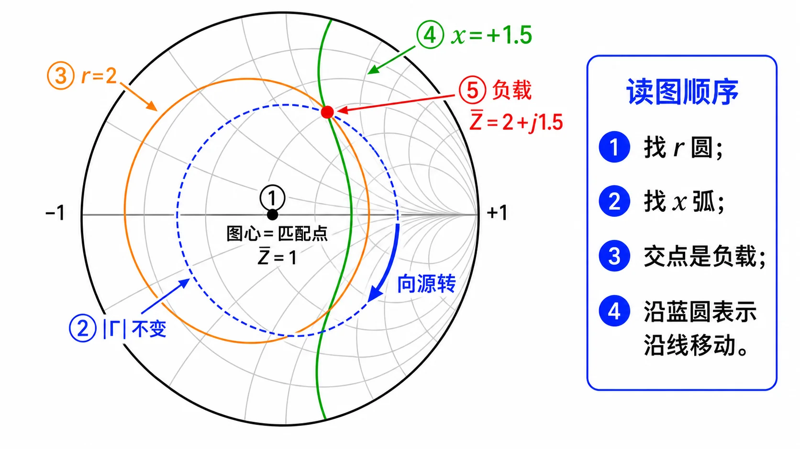
图：先看图内编号：① 图心是匹配点，② 蓝色虚线圆表示沿无耗线移动时 $|\Gamma|$ 不变，③ 橙色圆是一条等 $r$ 圆，④ 绿色弧是一条等 $x$ 弧，⑤ 红点是 $r$ 与 $x$ 的交点，也就是负载点。右侧读图顺序只要求你会找「$r$ 圆 + $x$ 弧 → 交点 → 沿蓝圆移动」，不要一开始就试图看懂所有灰线。
下列 第 1～5 条为公式侧预备，可与各题 解法一 对照。
- 归一化阻抗 $\bar Z_L=Z_L/Z_c$：把不同 $Z_c$ 的题放到同一尺度，Smith 圆图外圈读数多为相对值。
- 反射系数 $\Gamma=\dfrac{\bar Z_L-1}{\bar Z_L+1}$（由归一化阻抗直接写，与 $\Gamma=\dfrac{Z_L-Z_c}{Z_L+Z_c}$ 等价）。
- 驻波比 $\rho=\dfrac{1+|\Gamma|}{1-|\Gamma|}$。
- 线长变换（解析）：自负载向源走过线长 $l$，
$$ Z_{\mathrm{in}}=Z_c\frac{Z_L+\mathrm{j}Z_c\tan\beta l}{Z_c+\mathrm{j}Z_L\tan\beta l},\quad \beta l=2\pi\frac{l}{\lambda}. $$
- 圆图操作口诀：向信号源沿等 $|\Gamma|$ 圆顺时针转电长度 $l/\lambda$；向负载则逆时针。解析结果应与「转圆图」一致。
Smith 圆图操作清单（本讲）§
- 先算 $\bar Z_L=Z_L/Z_c$，在阻抗圆图上标出负载点：在 等 $r=\mathrm{Re}\,\bar Z_L$ 圆 与 等 $x=\mathrm{Im}\,\bar Z_L$ 弧 的交点；忽略其余淡灰线，当作坐标背景即可（或化为 $\bar Y_L$ 在导纳图操作，视题型而定）。
- 向信号源移动：沿等 $|\Gamma|$ 圆按外圈波长刻度 顺时针 转 $l/\lambda$。
- 读图得到的新点即 $\bar Z_{\mathrm{in}}$（或 $\bar Y$）；再乘 $Z_c$（或除以 $Z_c$）换回物理量。
- 单支节匹配常在 导纳图 上找与 $g=1$ 圆交点定 $d$，再在短路/开路点沿外圆读支节长度。
- 读图误差正常；以解析公式结果为基准，圆图用于检验与建立直觉。
圆图与解析并列： 若大纲或教师要求「圆图解」，请按每题的圆图步骤操作；最终数值应与公式解、标准答案互相吻合。圆图读数允许小误差，但方向、所在圆、起点和终点不能错。
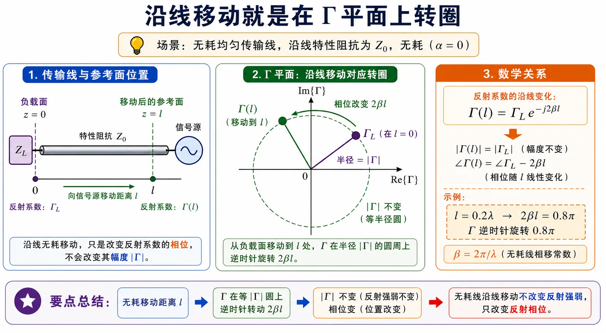
读图说明（零基础，与上图配合）
- 坐标面：上图横轴为 $\mathrm{Re}\,\Gamma$，纵轴为 $\mathrm{Im}\,\Gamma$；虚线圆是 $|\Gamma|=\mathrm{const}$（未画 $r,x$ 网格，只强调「沿线走 = 在该圆上转」）。
- 两点含义：圆上 圆点 可视为负载参考处的 $\Gamma_L$，方点 可视为再向源走过某段线长后的 $\Gamma$。
- 绿弧与线长：绿弧沿虚线圆 顺时针 从 $\Gamma_L$ 转到新点，对应的相位变化为 $\Delta\phi=2\beta l=4\pi l/\lambda$（向源 $z$ 增大，$\Gamma$ 乘 $\mathrm{e}^{-\mathrm{j}2\beta z}$）。图中示例取 $2\beta l=0.8\pi$，即 $l/\lambda=0.2$。
- 与印刷 Smith 图：手边完整圆图上，这一段就是沿等 $|\Gamma|$ 圆读外圈 「朝向发生器」 刻度走过 $0.2\lambda$。
- 自检：顺时针/向源、逆时针/向负载，须与 符号与导读 中 $z$ 约定及公式 $\Gamma(z)=\Gamma_L\mathrm{e}^{-\mathrm{j}2\beta z}$ 一致；若转向画反，所有线长读数都会错。
图注小结：向信号源走线长 $l$ 时，$\Gamma(z)=\Gamma_L\mathrm{e}^{-\mathrm{j}2\beta z}$ 对应在 $|\Gamma|$ 圆上沿顺时针转过相位 $2\beta l$。图中取 $l=0.2\lambda$ 只是示例，用来说明“线长变成圆上的转角”。
第 1 题§
（对应大纲《第二次教学大纲及作业》Lec07 作业 第 1 题；该讲教材章节建议对照 §1.5。）
题目复述§
$Z_c=50\,\Omega$，$Z_L=(100+\mathrm{j}75)\,\Omega$，求终端反射系数 $\Gamma$。
详细思路§
复习上节 ①②；本题直接用 $\Gamma=\dfrac{Z_L-Z_c}{Z_L+Z_c}$ 或先 $\bar Z_L$ 再 $\Gamma=\dfrac{\bar Z_L-1}{\bar Z_L+1}$。
思路叙述：
先算 $\bar Z_L$，避免大数；再代入 $\Gamma=(\bar Z_L-1)/(\bar Z_L+1)$。
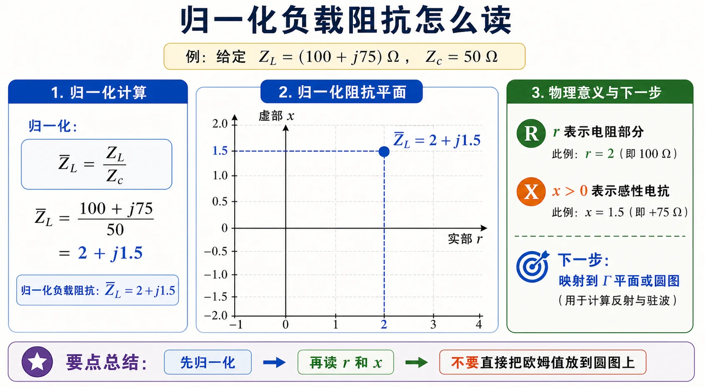
图：本题 $\bar Z_L=2+\mathrm{j}1.5$。先把欧姆值变成归一化坐标，再把这个点映射到 $\Gamma$ 平面或 Smith 圆图上读反射系数。
解法一：公式（解析）§
$$ \bar Z_L=\frac{100+\mathrm{j}75}{50}=2+\mathrm{j}1.5. $$
$$ \Gamma=\frac{1+\mathrm{j}1.5}{3+\mathrm{j}1.5} =\frac{(1+\mathrm{j}1.5)(3-\mathrm{j}1.5)}{9+2.25} =\frac{3-\mathrm{j}1.5+\mathrm{j}4.5+2.25}{11.25} =\frac{5.25+\mathrm{j}3}{11.25} \approx 0.467+\mathrm{j}0.267. $$
$|\Gamma|\approx 0.538$。
标准结论： $\Gamma\approx 0.467+\mathrm{j}0.267$，$|\Gamma|\approx 0.538$。
- 检验/注意： 与 解法二 圆图上读出的 $\Gamma$ 应接近；差 $0.01\sim0.02$ 级多为描点视差。
解法二：圆图（Smith 阻抗圆图）§
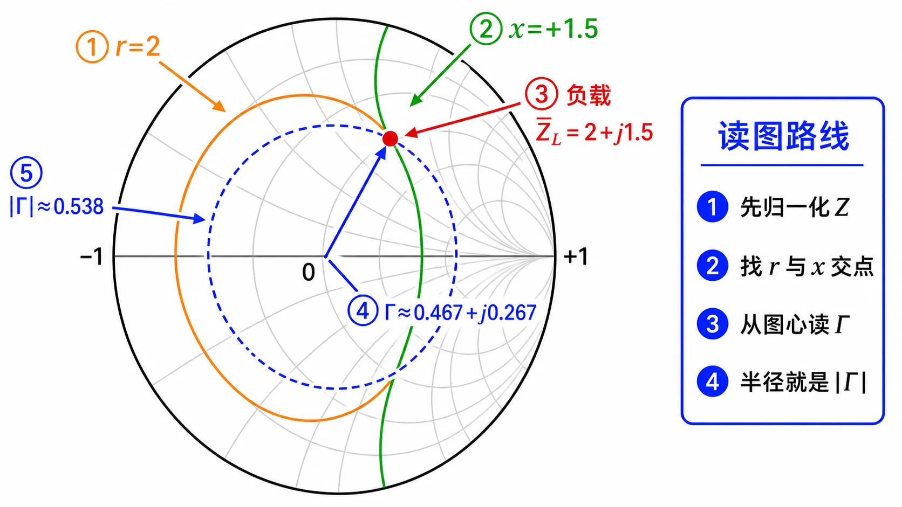
读图说明（零基础）
- 淡灰色线：本图已用 减密网格（比「满图 Smith」灰线少），仍不必逐条辨认。只找 $\bar Z_L=2+\mathrm{j}1.5$ 对应的 $r=2$ 圆 与 $x=+1.5$ 弧 的交点即可，其余灰线当背景坐标网。
- 坐标面：本图是 $\Gamma$ 平面（$\mathrm{Re}\,\Gamma$ 横轴，$\mathrm{Im}\,\Gamma$ 纵轴）；最外黑线圆为 $|\Gamma|=1$。淡灰曲线为 等 $r$ 圆、等 $x$ 弧 两族。
- 归一化：本题 $Z_c=50\,\Omega$，故 $\bar Z_L=(100+\mathrm{j}75)/50=2+\mathrm{j}1.5$。在图上即 $r=2$ 圆 与 $x=+1.5$ 弧 的交点（感性为正电抗）。
- 图上对象：红色负载点为归一化阻抗 $\bar Z_L$；图内编号按「找 $r$ 圆、找 $x$ 弧、交点为负载、从图心读 $\Gamma$、半径读 $|\Gamma|$」排列，与公式 $\Gamma=(\bar Z-1)/(\bar Z+1)$ 是同一件事。
- 方向：本题只求负载处 $\Gamma$，不需要沿线旋转；若误把别的题的「顺时针」套到本题，属于概念混淆。
- 与解法一对表：公式算出 $\Gamma\approx 0.467+\mathrm{j}0.267$；图上读数应落在此附近。
- 自检：$|\Gamma|<1$；若点落到单位圆外，说明归一化或描点错误。
圆图操作步骤
- 取 $Z_c=50\,\Omega$：$\bar Z_L=2+\mathrm{j}1.5$，故 $r=2$、$x=+1.5$（实部、虚部）。具体如何在图上找这两条线，见上文 「（1″）$r=2$、$x=1.5$ 具体怎么找？」：纸质图看刻度标字，本页零基础图则用橙/绿加粗线标出。
- 在阻抗圆图上找 标有 $r=2$ 的等电阻圆 与 标有 $x=+1.5$ 的等电抗弧（上半面） 的交点。
- 用圆图标尺读 $\Gamma$（实部、虚部或模角）。
- 与 解法一 数值对照，允许小幅读图误差。
常见疑惑点§
- 疑惑： $\Gamma=\dfrac{Z_L-Z_c}{Z_L+Z_c}$ 与 $\Gamma=\dfrac{\bar Z_L-1}{\bar Z_L+1}$ 会算出不一致吗？解答： 数学上完全等价（后者即前者除以 $Z_c$ 后的形式）；数值差异只可能来自计算或舍入。
- 疑惑： 圆图上读的 $\Gamma$ 与解析差一点点算不算错？解答： 读图有视差，一般允许小幅偏差；应以解析或计算器为准，圆图作校验。
自测 1 分钟§
- 问： 无源负载下，$|\Gamma|$ 能否大于 1？答： 不能；$|\Gamma|\le 1$，故 $\rho\ge 1$。
第 2 题§
（对应大纲 Lec07 作业 第 2 题；该讲教材章节 §1.5。）
题目复述§
$Z_c=50\,\Omega$，$Z_L=(100-\mathrm{j}50)\,\Omega$，求驻波比 $\rho$。
详细思路§
复习 ①②③；本题先求 $\Gamma$ 再求 $\rho$。
思路叙述：
$\bar Z_L\to\Gamma\to|\Gamma|\to\rho$。
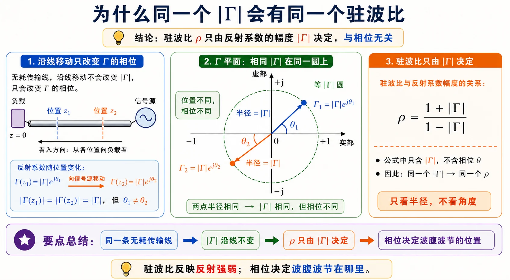
图：两个反射系数幅角不同但模相同，代入 $\rho=(1+|\Gamma|)/(1-|\Gamma|)$ 得同一驻波比。
解法一：公式（解析）§
$$ \bar Z_L=\frac{100-\mathrm{j}50}{50}=2-\mathrm{j}. $$
$$ \Gamma=\frac{1-\mathrm{j}}{3-\mathrm{j}} =\frac{(1-\mathrm{j})(3+\mathrm{j})}{10} =\frac{3+\mathrm{j}-3\mathrm{j}+1}{10}=0.4-\mathrm{j}0.2. $$
$$ |\Gamma|=\sqrt{0.16+0.04}=\sqrt{0.2}\approx 0.4472,\quad \rho=\frac{1+|\Gamma|}{1-|\Gamma|}\approx 2.618. $$
标准结论： $\rho\approx 2.618$。
- 检验/注意： $\rho$ 仅依赖 $|\Gamma|$，与 $\Gamma$ 辐角无关。
解法二：圆图（Smith 阻抗圆图）§
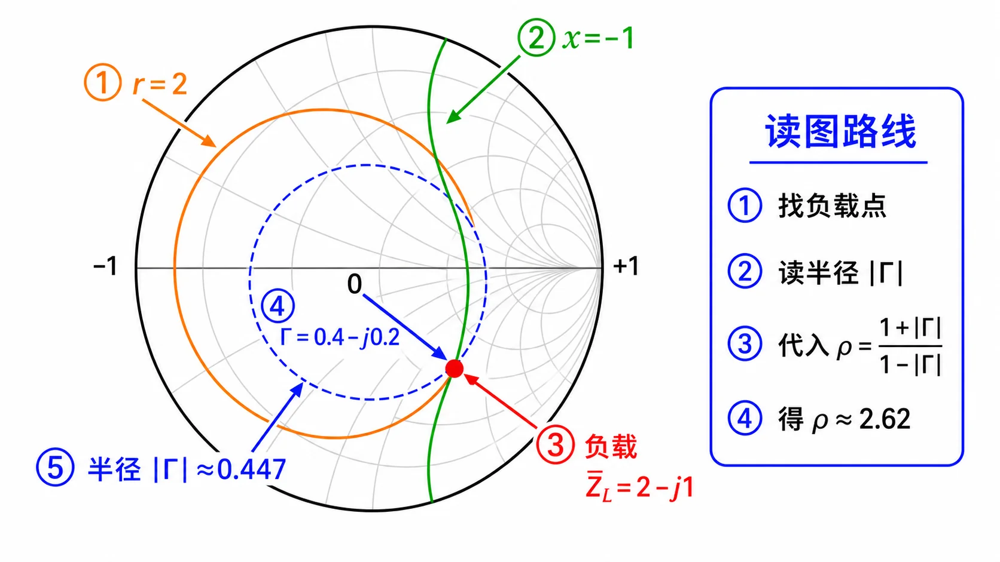
读图说明（零基础）
- 淡灰色线：减密后的 等 $r$ 圆 / 等 $x$ 弧；本题只需用 $r=2$ 与 $x=-1$ 定负载点，其余灰线可忽略。
- 坐标面：$\Gamma$ 平面 + 等 $r,x$ 网格；蓝色虚线圆为过负载点的 等 $|\Gamma|$ 圆（圆心在原点，半径 $=|\Gamma_L|$）。
- 归一化：$\bar Z_L=2-\mathrm{j}$，即 $r=2$ 与 $x=-1$（容性为负电抗）的交点。
- 图上对象：圆点为负载点；虚线圆强调「若只改变 $\Gamma$ 辐角、不改变模，则点只能在此圆上滑动」——对应 $\rho$ 不变 的物理事实。
- 方向：本题只读 $|\Gamma|$ 算 $\rho$，不必沿线旋转；旋转同一圆上另一点可验证 $\rho$ 相同（与 解法一 结论一致）。
- 与解法一对表：读出 $|\Gamma|\approx 0.447$，代入 $\rho=(1+|\Gamma|)/(1-|\Gamma|)$ 得 $\approx 2.62$；角标亦给出 $\rho$ 近似值。
- 自检：$|\Gamma|=\sqrt{0.2}\approx 0.447$；若半径画错，$\rho$ 会整体错。
圆图操作步骤
- 标出 $\bar Z_L=2-\mathrm{j}$。
- 作过该点的等 $|\Gamma|$ 圆（圆心 $\Gamma=0$，半径到该点距离）。
- 读 $|\Gamma|$，算 $\rho=(1+|\Gamma|)/(1-|\Gamma|)$；或用纸质圆图的 $\rho$ 刻度。
- 可在同一虚线圆上另取一点，验证 $\rho$ 不变。
常见疑惑点§
- 疑惑： 能不能不先求 $\Gamma$，直接由 $Z_L$ 写 $\rho$？解答： 可以，但通常仍先算 $|\Gamma|=|(Z_L-Z_c)/(Z_L+Z_c)|$，再用 $\rho=(1+|\Gamma|)/(1-|\Gamma|)$；驻波比不依赖 $\Gamma$ 的辐角。
- 疑惑： $\rho$ 会小于 1 吗？解答： 无源负载下 $|\Gamma|\le 1$，故 $\rho\ge 1$；$\rho=1$ 对应完全匹配。
第 3 题§
（对应大纲 Lec07 作业 第 3 题；该讲教材章节 §1.5。）
题目复述§
$Z_c=50\,\Omega$，$Z_L=(50-\mathrm{j}100)\,\Omega$，线长 $l=0.2\lambda$（指始端距负载），求始端 $Z_{\mathrm{in}}$。
详细思路§
复习 ④；注意题中「没有指定 $z$ 时指始端」即线长 $l=0.2\lambda$。
思路叙述：
代入 $Z_{\mathrm{in}}$ 公式，$\beta l=2\pi\times 0.2=0.4\pi$，$\tan\beta l=\tan(72^\circ)$。
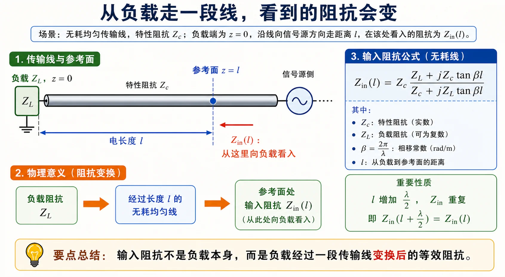
图：$z=0$ 接 $Z_L$，沿无耗线向源走过 $l$（本题 $l/\lambda=0.2$）的截面为 $Z_{\mathrm{in}}$。
解法一：公式（解析）§
$$ \beta l=0.4\pi,\quad \tan\beta l\approx 3.0777. $$
$$ Z_{\mathrm{in}}=50\cdot\frac{50-\mathrm{j}100+\mathrm{j}50\times 3.0777}{50+\mathrm{j}(50-\mathrm{j}100)\times 3.0777}. $$
分母展开：$\mathrm{j}(50-\mathrm{j}100)t=100t+\mathrm{j}50t$，故分母 $=50+100t+\mathrm{j}50t\approx 357.8+\mathrm{j}153.9$；分子 $\approx 50+\mathrm{j}53.9$。相除后
$$ Z_{\mathrm{in}}\approx(8.63+\mathrm{j}3.82)\,\Omega. $$
（中间步可用计算器。）
标准结论： $Z_{\mathrm{in}}\approx(8.63+\mathrm{j}3.82)\,\Omega$。
- 检验/注意： 与 解法二 读出的 $\bar Z_{\mathrm{in}}$ 乘 $50$ 后应一致。
解法二：圆图（Smith 阻抗圆图）§
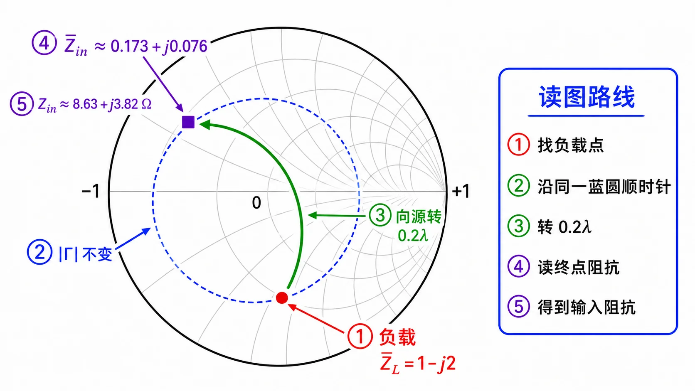
读图说明（零基础）
- 淡灰色线：等 $r$/等 $x$ 网（已减密）；先定 $\bar Z_L=1-\mathrm{j}2$（$r=1$、$x=-2$ 的交点），再沿 绿弧 转，不必研究每条灰线。
- 坐标面：$\Gamma$ 平面 + Smith 阻抗网格；移动轨迹在 等 $|\Gamma|$ 圆 上。
- 归一化：$\bar Z_L=(50-\mathrm{j}100)/50=1-\mathrm{j}2$。绿弧表示从负载点 向信号源 走过 $l/\lambda=0.2$ 时 $\Gamma$ 的相位变化：$\Gamma_{\mathrm{in}}=\Gamma_L\mathrm{e}^{-\mathrm{j}4\pi l/\lambda}$（因 $2\beta l=4\pi l/\lambda$）。
- 图上对象：圆点 = 负载 $\bar Z_L$；方点 = 向源转 $0.2\lambda$ 后的 $\bar Z_{\mathrm{in}}$（在等 $|\Gamma|$ 圆上、沿弧顺时针到达）。
- 方向：向源 = 顺时针（与公共预备中的口诀一致）。若逆时针转，会得到错误的输入阻抗。
- 与解法一对表：绿弧对应的电长度是 $0.2\lambda$；终点读 $\bar r,\bar x$ 后 $Z_{\mathrm{in}}=50(\bar r+\mathrm{j}\bar x)\approx(8.63+\mathrm{j}3.82)\,\Omega$。
- 自检：模 $|\Gamma|$ 沿线不变；若弧心不在原点或半径变化，则图画错。
圆图操作步骤
- 标 $\bar Z_L=1-\mathrm{j}2$。
- 向源：沿等 $|\Gamma|$ 圆 顺时针 转 $0.2\lambda$（纸质图用外圈「朝向发生器」刻度）。
- 读终点 $\bar Z_{\mathrm{in}}$。
- $Z_{\mathrm{in}}=50\,\bar Z_{\mathrm{in}}$，与 解法一 对照。
常见疑惑点§
- 疑惑： 公式里的 $l$ 是物理长度还是 $l/\lambda$？解答： 式中用 $\beta l=2\pi l/\lambda$，故 $l$ 可与 $\lambda$ 同单位相除得电长度 $l/\lambda$；本题直接给 $l=0.2\lambda$，即 $\beta l=0.4\pi$。
- 疑惑： 「始端距负载」会不会搞反成从源算？解答： 无耗线 $Z_{\mathrm{in}}$ 公式默认：线段一端接 $Z_L$（负载端），向源方向量线长 $l$ 得到另一端输入阻抗；与 符号与导读 中 $z$ 约定一致。
自测 1 分钟§
- 问： $\beta l=0.4\pi$ 时，若误把 $\beta l$ 当成 $0.4\,\mathrm{rad}$，$\tan\beta l$ 会怎样？答： 完全错误；本题 $\beta l$ 为弧度，且 $0.4\pi\approx 1.26\,\mathrm{rad}$，必须用 $\beta l=2\pi l/\lambda$ 统一单位。
第 4 题§
（对应大纲 Lec07 作业 第 4 题；该讲教材章节 §1.5。）
题目复述§
$Z_c=100\,\Omega$，$Z_L=(80+\mathrm{j}100)\,\Omega$，测得某处输入阻抗 $Z_{\mathrm{in}}=(90-\mathrm{j}109)\,\Omega$，工作波长 $\lambda=10\,\mathrm{m}$，求该处到负载的线长 $l$。
详细思路§
复习 ④；本题是反解 $l$，且 $Z_{\mathrm{in}}(l)$ 具有 $\lambda/2$ 周期：$l$ 与 $l+n\lambda/2$ 同解（$n$ 为整数）。
思路叙述：
（无耗线变换式即 本讲公共预备知识 第 4 条，此处为反解 $l$。）令 $\bar Z_L$、$\bar Z_{\mathrm{in}}$ 已知，由
$$ \bar Z_{\mathrm{in}}=\frac{\bar Z_L+\mathrm{j}\tan\beta l}{1+\mathrm{j}\bar Z_L\tan\beta l} $$
解出 $t=\tan\beta l$（一元方程），再得 $l/\lambda$，取最短正解。
几何关系同 第 3 题 的“负载到输入截面”示意图：已知 $Z_L$ 与某截面 $Z_{\mathrm{in}}$，反求该截面到负载的电长度 $l$。
解法一：公式（解析）§
$\bar Z_L=0.8+\mathrm{j}1$，$\bar Z_{\mathrm{in}}=0.9-\mathrm{j}1.09$。由上式交叉相乘整理得关于 $t$ 的线性方程，解出 $t=\tan\beta l\approx 3.39$，对应
$$ \beta l\approx 1.199\,\mathrm{rad},\quad \frac{l}{\lambda}\approx 0.191,\quad l\approx 1.91\,\mathrm{m}. $$
多解说明：加任意 $n\lambda/2$ 的线长，输入阻抗重复，故通解 $l\approx 0.191\lambda+n\lambda/2$。
标准结论： 最短 $l\approx 0.191\lambda\approx 1.91\,\mathrm{m}$；通解 $l=0.191\lambda+n\lambda/2$（$n$ 为整数）。
- 检验/注意： 工程上常取最短距离；圆图上即沿等 $|\Gamma|$ 圆转到目标点的最短弧长。
解法二：圆图（Smith 阻抗圆图）§
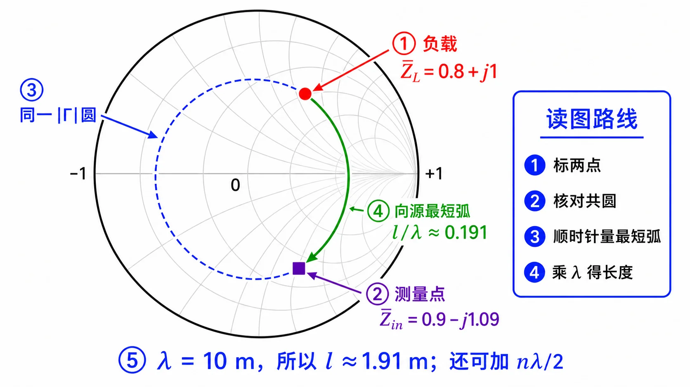
读图说明（零基础）
- 淡灰色线：背景 $r,x$ 网；本题先在灰网上找到 $\bar Z_L$ 与 $\bar Z_{\mathrm{in}}$ 两点，再沿 等 $|\Gamma|$ 圆（蓝色虚线圆）量弧长。
- 坐标面：$\Gamma$ 平面 + 网格；灰色点线圆为同时过 $\bar Z_L$ 与 $\bar Z_{\mathrm{in}}$ 的 等 $|\Gamma|$ 圆（两点必在同一圆上，否则数据与无耗线模型矛盾）。
- 归一化：$\bar Z_L=0.8+\mathrm{j}1$、$\bar Z_{\mathrm{in}}=0.9-\mathrm{j}1.09$（已由 $Z_c=100\,\Omega$ 除过）。
- 图上对象：圆点 = 负载；方点 = 测量截面；绿弧 = 从负载 向源（顺时针） 走到测量点的弧，其电长度即 $\Delta(l/\lambda)$。
- 方向：本题求「测量点到负载的距离」，参考面更靠源，故从 负载点顺时针 转到 $\bar Z_{\mathrm{in}}$（与第 3 题同向）。若反向转，得到的是「绕远」的另一支解。
- 与解法一对表：弧长对应 $\Delta(l/\lambda)\approx 0.191$；$l=\Delta(l/\lambda)\cdot\lambda\approx 1.91\,\mathrm{m}$。另可加 $n\lambda/2$ 得到通解（圆图上再转半圈整数倍）。
- 自检：先核对两点确实在同一等 $|\Gamma|$ 圆上；若不在，先检查 $\bar Z_L$、$\bar Z_{\mathrm{in}}$ 是否算错。
圆图操作步骤
- 标出 $\bar Z_L$、$\bar Z_{\mathrm{in}}$，核对共圆。
- 从 $\bar Z_L$ 顺时针沿等 $|\Gamma|$ 圆走到 $\bar Z_{\mathrm{in}}$，读 最短弧对应的 $\Delta(l/\lambda)\approx 0.191$。
- $l=\Delta(l/\lambda)\cdot\lambda$，$\lambda=10\,\mathrm{m}$ 得 $l\approx 1.91\,\mathrm{m}$。
- 需要时加上 $n\lambda/2$ 写出通解。
常见疑惑点§
- 疑惑： 为什么通解要加 $n\lambda/2$？解答： $Z_{\mathrm{in}}$ 沿线周期为 $\lambda/2$（因 $\tan\beta l$ 周期为 $\pi$），故同一测量 $Z_{\mathrm{in}}$ 对应无穷多线长，彼此相差 $\lambda/2$ 整数倍。
- 疑惑： 题给 $Z_{\mathrm{in}}$ 与 $Z_L$ 代入反解 $t=\tan\beta l$，为什么会出现「微小虚部」？解答： 实测或印刷数据往往舍入；严格应在无耗线上存在实 $t$，工程上取 $\mathrm{Re}(l/\lambda)$ 即可，与 $l\approx 0.191\lambda$ 一致。
- 疑惑： $\arctan t$ 多值怎么办？解答： 与 $\tan\beta l$ 多支一样，在 $(0,\pi)$ 内取符合物理线长且最短的那一支，并与圆图旋转方向核对。
第 5 题§
（对应大纲 Lec07 作业 第 5 题；该讲教材章节 §1.5。）
题目复述§
$Z_c=50\,\Omega$，$\rho=2$，距终端第一个电压最小点（波节）位置为 $0.2\lambda$，求 $Z_L$。
详细思路§
复习 ③ 与 Lec06-5 中波节与 $\Gamma$ 相位关系；第一个波节位置定 $\Gamma_L$ 辐角。
思路叙述：
（套路与 Lec06 第 5 题 相同，仅 $z_{\min}$ 数值不同。）$|\Gamma|=\dfrac{\rho-1}{\rho+1}$；第一波节在 $z_{\min}=0.2\lambda$，写 $\Gamma_L=-|\Gamma|\mathrm{e}^{\mathrm{j}2\beta z_{\min}}$，再 $Z_L=Z_c\dfrac{1+\Gamma_L}{1-\Gamma_L}$。
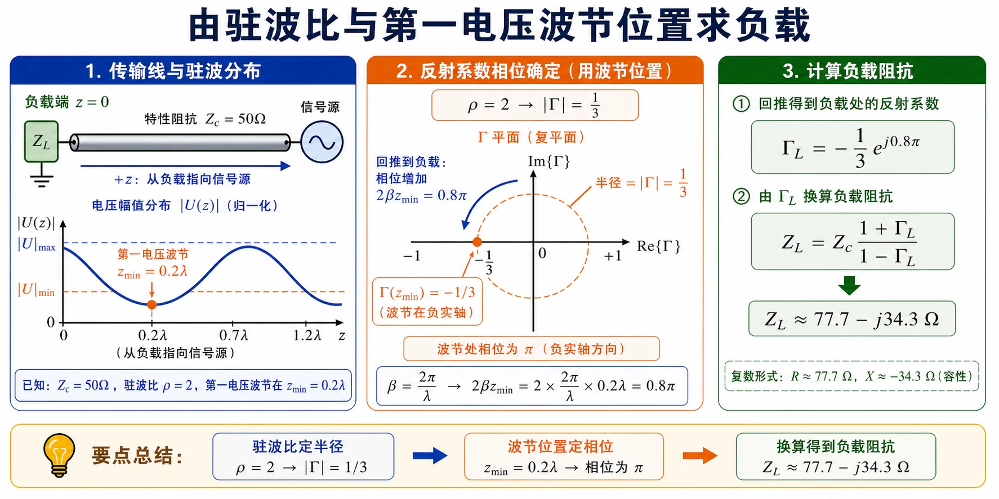
图：这道题与 Lec06 第 5 题同套路，只是第一波节位置改为 $z_{\min}=0.2\lambda$，因此回推到负载面的相位也随之改变。
解法一：公式（解析）§
$|\Gamma|=\dfrac{1}{3}$，$2\beta z_{\min}=0.8\pi$，
$$ \Gamma_L=-\frac{1}{3}\mathrm{e}^{\mathrm{j}0.8\pi} \quad\Rightarrow\quad Z_L\approx(77.73-\mathrm{j}34.27)\,\Omega. $$
标准结论： $Z_L\approx(77.73-\mathrm{j}34.27)\,\Omega$。
- 检验/注意： 与 Lec06-5 同一类题，只是波节位置数据不同。
解法二：圆图（Smith 阻抗圆图）§
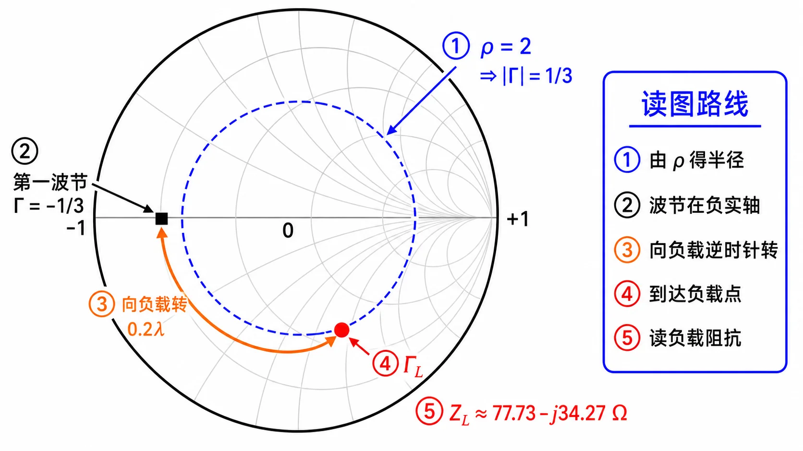
读图说明（零基础）
- 淡灰色线：等 $r,x$ 网（减密）；定出 $\Gamma_L$（红色负载点）后，再在灰网上读 $\bar Z_L$，不必对每条灰弧编号。
- 坐标面：$\Gamma$ 平面；虚线圆为 $|\Gamma|=1/3$（由 $\rho=2$ 得 $|\Gamma|=(\rho-1)/(\rho+1)$）。
- 归一化：最后读负载 $\bar Z_L$ 后乘 $Z_c=50\,\Omega$ 得 $Z_L$。
- 图上对象：方点落在 负实轴上，表示 第一波节 处 $\Gamma(z_{\min})=-|\Gamma|=-1/3$（电压最小、反射波与入射波反相叠加的常用约定）。圆点为 负载 $\Gamma_L$。橙弧从方点 逆时针 转 $0.2\lambda$ 到圆点——因为负载在波节的 向负载一侧（$z$ 比波节小 $0.2\lambda$），相当于从波节 走向负载，与「向源顺时针」相反。
- 方向：本题关键弧是 逆时针 $0.2\lambda$（向负载）。勿与第 3、4 题「向源顺时针」混用。
- 与解法一对表：得到 $\Gamma_L$ 后，在阻抗圆图上读 $\bar Z_L$，$Z_L=50\bar Z_L\approx(77.73-\mathrm{j}34.27)\,\Omega$。
- 自检：$|\Gamma_L|=1/3$ 应仍在虚线圆上；若点跑出该圆，说明转角或起点取错。
圆图操作步骤
- 由 $\rho=2$ 得 $|\Gamma|=1/3$，画等 $|\Gamma|$ 圆。
- 在 负实轴 上取 $\Gamma=-1/3$ 作为 第一波节。
- 从该点 逆时针（向负载）转 $0.2\lambda$ 得 $\Gamma_L$。
- 读 $\bar Z_L$，$Z_L=50\,\bar Z_L$，与 解法一 对照。
常见疑惑点§
- 疑惑： 「第一个电压最小点」会不会不是第一波节？解答： 本题即指距负载最近的电压波节；若题目另定义「第二个」「第三个」，需相应改 $2\beta z_{\min}$ 与 $\Gamma_L$ 相位关系，不能照搬 $0.2\lambda$ 这一套。
- 疑惑： Lec06-5 与本题公式一样吗？解答： 一样：$|\Gamma|=(\rho-1)/(\rho+1)$，第一波节有 $\Gamma_L=-|\Gamma|\mathrm{e}^{\mathrm{j}2\beta z_{\min}}$，再 $Z_L=Z_c(1+\Gamma_L)/(1-\Gamma_L)$；仅 $z_{\min}$ 数值不同。